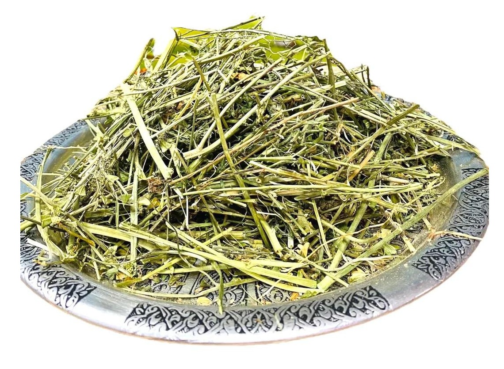

50 qr - 10 AZN
🌿 Ən mühüm faydalarından biri qanaxmaların azaldılmasına kömək etməsidir.
Xalq təbabətində burun qanaxmaları, diş əti qanamaları və yüngül daxili qanaxmalarda dəstək məqsədilə istifadə olunur.
🌸 Qanın laxtalanmasına və qan itkisinin qarşısını almağa kömək edir.
- Bu səbəbdən bitki xüsusilə qadınlarda aybaşı dövründə həddindən artıq qanaxmanın azalmasında faydalı hesab edilir.
- Aybaşı dövrünün tənzimlənməsinə, menstrual ağrıların və spazmların yüngülləşdirilməsinə kömək edə bilər.
- Doğuşdan sonra uşaqlığın yığılmasına dəstək verdiyi və bərpa prosesini sürətləndirdiyi də qeyd olunur.
- Xalq arasında çoban çantası çayı hormonal balansı dəstəkləyən bitkilərdən biri kimi tanınır.
- Antiseptik xüsusiyyəti infeksiya riskini azaltmağa kömək edir.
🩺 İltihabəleyhinə və antiseptik xüsusiyyətlərə malikdir
- Sidik yolları iltihablarında, yüngül böyrək və sidik kisəsi narahatlıqlarında çay şəklində istifadə edilə bilər.
- Bu təsiri sayəsində orqanizmdə iltihabın azalmasına və infeksiyalara qarşı müqavimətin artmasına kömək edir.
- Bitki həmçinin qan təzyiqinin tənzimlənməsində dəstəkçi rol oynaya bilər.
- Xüsusilə yüngül yüksək təzyiq hallarında sakitləşdirici təsir göstərərək damarların rahatlamasına kömək edir.
❤️️ Ürək-damar sistemininə faydası
- Qan dövranını yaxşılaşdıraraq ürək-damar sisteminin ümumi sağlamlığını dəstəkləyir.
🍽️ Həzm sisteminə də müsbət təsir
- Bağırsaq hərəkətlərini tənzimləməyə, ishal zamanı yüngülləşdirici təsir göstərməyə kömək edə bilər.
- Tərkibindəki taninlər bağırsaq selikli qişasını qoruyaraq həzmi yaxşılaşdırır və mədə-bağırsaq narahatlıqlarını azalda bilər.
- Dəri sağlamlığı baxımından çoban çantası yaraların sağalmasını sürətləndirən bitkilərdən sayılır.
☕ Çoban çantası bitkisi – istifadə qaydaları:
- Çay şəklində istifadə: Ən geniş yayılmış və təhlükəsiz istifadə formasıdır.
- 1 çay qaşığı qurudulmuş çoban çantası otu. 1 stəkan (200 ml) qaynar su. Çay kimi 10–15 dəqiqə dəmlənir. Süzülərək içilir.
- Gündə 1–2 dəfə. Yeməkdən sonra içilməsi tövsiyə olunur. Axşam saatlarında içilə bilər.
- 2–3 həftəlik kurs şəklində istifadə edilir. 7–10 gün fasilə verildikdən sonra yenidən davam etmək olar.
- Qastrit və mədə yanması zamanı ilıq halda içilməsi məsləhətdir.
⚠️ Diqqət
- Çoban çantası güclü təsirə malik bitki olduğu üçün uzun müddət və yüksək dozada istifadə tövsiyə edilmir.
- Qan durulaşdırıcı dərman qəbul edənlər, hamilə qadınlar və ciddi xroniki xəstəlikləri olan şəxslər istifadədən əvvəl mütləq həkimlə məsləhətləşməlidir.
- Düzgün dozada və qısa müddətli istifadə edildikdə isə çoban çantası təbii və faydalı bitkilərdən biri hesab olunur.